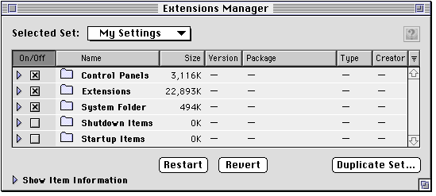
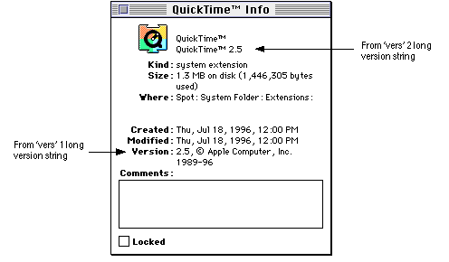
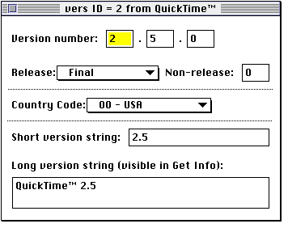
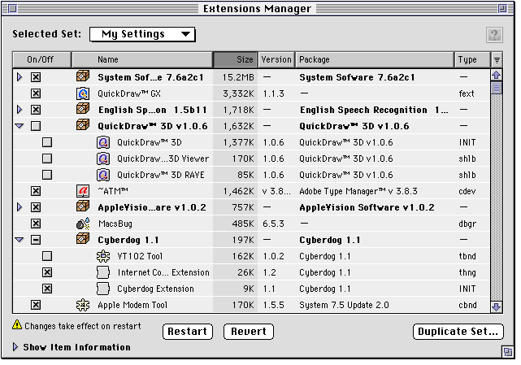
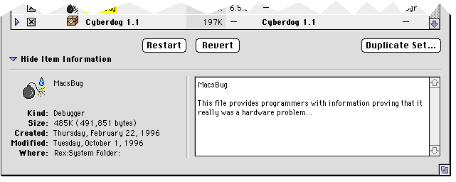
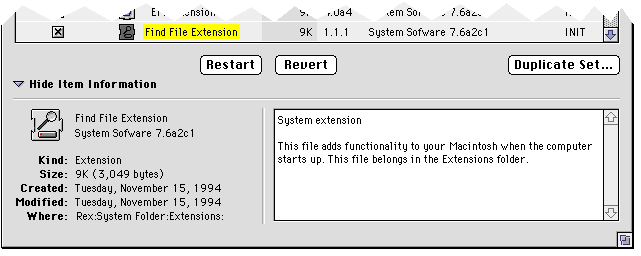
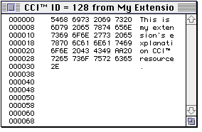

Legacy Document
Important: This document is part of the Legacy section of the ADC Reference Library. This information should not be used for new development.
Current information on this Reference Library topic can be found here:
ADC Home > Reference Library > Technical Notes > Legacy Documents > Mac OS 9 & Earlier >
Important: This document is part of the Legacy section of the ADC Reference Library. This information should not be used for new development.
Current information on this Reference Library topic can be found here:
|
A New LookThe first change you will notice in Extensions Manager 4.0 is the new look. It's called the Apple Grayscale Appearance, as shown in Figure 1.  How the Extensions Manager Interacts With Your ExtensionThe Extensions Manager 4.0 disables and enables extensions as past versions did by moving the disabled extensions to various folders inside the current System Folder with the string "(Disabled)" appended to the source folders' name. It enables extensions by moving from the disabled folder to their appropriate folder. This movement of extensions between the active folders and the disabled folders brings up a warning for developers of extensions.
Package HandlingBeyond the new look, the second area of improvement is the ability to deal with "packages". A package is a group of extensions that go together, either because they are from the same manufacturer or because the extensions rely on each other. When viewing the extensions list by package, users can easily turn all related extensions on or off with one click of the mouse. Extensions Manager 4.0 provides three different ways to view the list of extensions:
The "as Folders" option resembles the previous Extensions Manager's list, which separated all the extensions from all the control panels from the System Folder items. The "as Items" list removes the folders from the list, so you don't have to be concerned with whether or not the item is a control panel or an extension. The newest and most powerful feature of Extensions Manager 4.0 is its ability to sort extensions "as Packages". Extensions Manager 3.0.X had a "System 7.5.X" selection in its pop-up menu -- a built-in package of those extensions that shipped with System 7.5.X. Extensions Manager 4.0 takes this idea to its logical conclusion, since it allows any vendor to define extension packages in an intuitive and flexible manner. Extensions Manager constructs packages by looking at the
 Extensions Manager uses the Figure 3 shows what a
 Extensions Manager 4.0 retrieves the version number from
the Extensions Manager 4.0 uses the short version string to display the version of a file in its window, and it uses the long version string as the package identifier for each extension. The short version string does not have to be limited to just a number, but it should be short. To use the package feature of Extensions Manager 4.0, the long version string of all extensions in the same package must match exactly. If you are a vendor of extensions or other items which go
into the System Folder (or one of its subfolders) and you
have multiple extensions that work as a group, you can make
them into a package by simply giving all of them the same
long version string in their Developers creating groups of extensions should package all of those extensions into one package, even if those extensions do not function together as a group. By doing so, your extensions appear as a complete software package and will be organized in a way that can be easily identified by the user when Extensions Manager 4.0's display is in the package mode.  As you can see in Figure 4, if there are two or more
items in a package, then a checkbox is shown, a special
package icon is displayed and the name of the package (taken
from the long version string in the Extensions Manager 4.0 incorporates tri-state checkboxes which let the user easily know that only some items in a group are on, just as the Installer lets you know that only some items in a custom install package will be installed, as in Figure 4. If the check box has a horizontal line through it, like this:
it means that one or more items in the group are not active, as is the case of the Cyberdog 1.1 package in Figure 4. The Item Information WindowThe "Item Information" window, shown in Figure 6, provides a place for the display of textual information describing the facilities provided by an extension. Vendors can provide this information by including necessary resources in their extension files. Extensions Manager 4.0 retrieves the textual information displayed in this window from one of four places. The search order for finding that information is as follows:
Here is an example from MacsBug's  If no information is found in any of these places, it
displays the default information (which is the same
information that the Finder displays in Balloon Help where
there is no  The format of the  The format of the Using the 'CCI References
Inside Macintosh: More Macintosh Toolbox, page 3-86,
regarding the
Inside Macintosh: Macintosh Toolbox Essentials, pages 7-31
through 7-33, regarding the The Writing a System Extension chapter in Inside Macintosh: Operating System Utilities (chapters 9 and 10) The Control Panels chapter in Inside Macintosh: More Macintosh Toolbox (8-1) Technote TB15-"New" cdev Messages Technote TB515-Control Panel Q&As Technote OV18-Resource in CDEV? Developers building safe "fat" accelerated extensions should refer to the sections of Inside Macintosh: PowerPC System Software beginning on pages 1-34 and 2-24. A piece of Extensions Manager trivia:
Downloadables
|
|